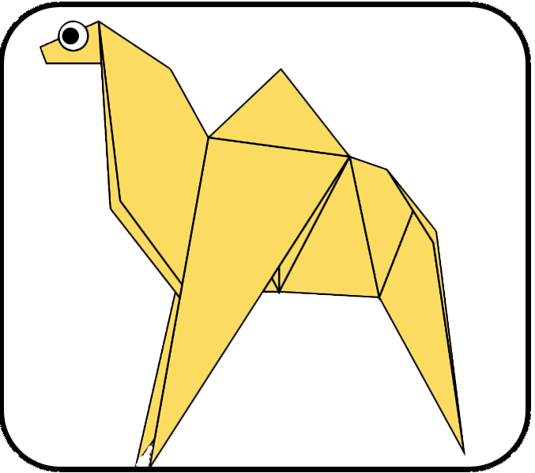
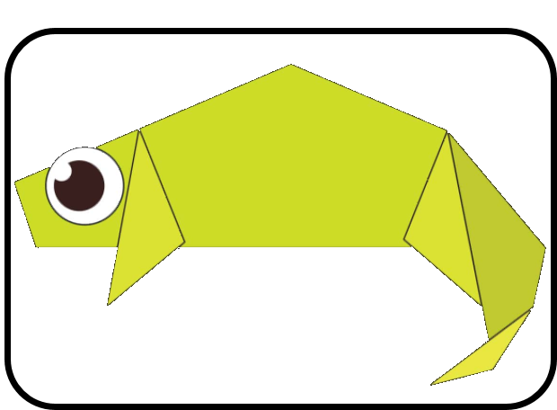
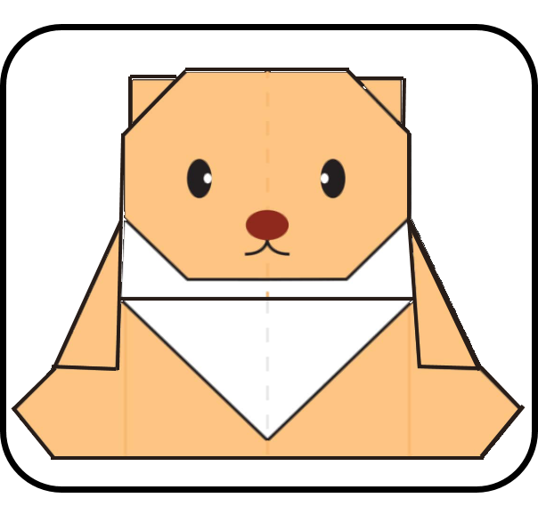
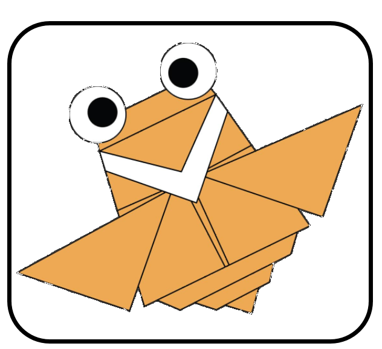

Origami Designs
About Us
Follow Us

Interesting facts about Pigeons.
- Pigeons are incredibly complex and intelligent birds!
- Pigeons are reknowned for their outstanding navigational skills!
- Pigeons have excellent hearing abilities!
Learn to make this outstanding Pigeon!

Interesting facts about Camels.
- Camel's ears are furry!
- Camels can move easily across sand because of it's specially designed feet!
- When they find water,they will drink as much as possible!
Learn to make this outstanding Camel!

Interesting facts about Chameleons.
- Chameleons are reptiles part of the iguana suborder!
- Changing skin colour is an important part of communication amoung chameleons!
- Most chameleons have a prehensile tail that they use to wrap around tree branches!
Learn to make this outstanding Chameleons!

Interesting facts about Bears.
- Bears eat mostly meat and fish, but some bears also eat plants and insects!
- The Asiatic black bear has the largest ears than other species of bears!
- Canada is home to nearly 60 % of the world’s polar bears!
Learn to make this outstanding Bear!
Interesting facts about Panda.
- Giant pandas are good at climbing trees and can also swim!
- Pandas go from pink to white and black or brown!
- An adult can eat 12–38 kilos of bamboo per day!
Learn to make this outstanding Panda!

Interesting facts about Cicada.
- Cicadas can survive a huge fall as babies, or nymphs!
- They are about the size of a grain of rice when they drop from a tree branch to the ground and start digging!
- They are true bugs (from the order Hemiptera). So you can call them a bug and be scientifically accurate!
Learn to make this outstanding Cicada!

Interesting facts about Tyrannosaurus Rex.
- Tyrannosaurus is a genus of tyrannosaurid theropod dinosaur!
- Weighing in at 7.5 tons, standing 15-20 feet tall and 40 feet long.T.rex was a fierce predator!
- The species Tyrannosaurus rex, often called T.rex or colloquially T-Rex!
Learn to make this outstanding Trex!
How good was my website?
1
2
3
4
5